<ion-header >

  <ion-navbar align-title="center" color="dark">
      <button ion-button left menuToggle>
        <ion-icon class="icon ion-home custom-icon" name="menu"></ion-icon>
      </button>
      <ion-title color="strange">SPOTSWOPPER</ion-title>

      <!-- Button for testing the login page -->
      <ion-buttons end>
          <button ion-button icon-only>
            <ion-icon class="icon ion-home custom-icon" name="notifications"></ion-icon>
          </button>
      </ion-buttons>

      <ion-buttons end>
        <button ion-button icon-only (click)="openModal()">
          <ion-icon name="options"></ion-icon>
        </button>
      </ion-buttons>
    </ion-navbar>

</ion-header>

<ion-content class="contentdiv">
  <div  #map id="map"></div>

  <ion-select (ngModelChange)="onChange()" [(ngModel)]="pinspotas" #mySelect>
    <ion-option>Private Spot</ion-option>
    <ion-option>Spot for Lease</ion-option>
    <ion-option>Spot for Sale</ion-option>
    <ion-option>Spot Purchased</ion-option>
</ion-select>

<div class="bottombuttonscontainer">

    <ion-grid style="background-color: #222; ">
      
      <ion-row  style="justify-content: center;" >

          <div class="testclass">
              <br>My Spots
          </div>

          <div class="testclass">
                  <br>Map Layers
          </div>

          <div class="testclass" (click)="openOptions(3)">
              <br>Off Grid
          </div>

          <div class="testclass" (click)="openOptions(4)">
              <br>Search Spots
          </div>

        </ion-row>


        <!-- <ion-row>
            <div class="wherebottomlie">
                  <div *ngIf="showThree" class="offgridcontainer">
                          <ion-grid>
                              <ion-row style="text-align:center;">
                      
                                    <ion-col >
                                      <button ion-button block color="redlike"                                 (click)="openSaveModal()">
                                               Save New Map
                                       </button>
                                     </ion-col>
              
                                    <ion-col >
                                         <button ion-button block color="greytwo">
                                      <ion-icon name="pulse" color="light"></ion-icon>
                  
                                                     Go Offline</button>
                                    </ion-col>
                                    
                          </ion-row>
                       </ion-grid>
                                      
                      </div >
            </div>

        </ion-row> -->
    </ion-grid>
    
</div>

</ion-content>
